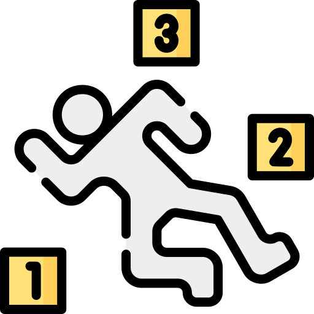

Visualizações Interativas
Dados da Segurança Pública
INDICADORES DE SEGURANÇA PÚBLICA
Campina Grande - PB
CVLI

Crimes Violentos Letais e Intencionais
Número de vítimas de Homicídios dolosos, Latrocínios, Feminicídios e quaisquer outros crimes intencionais que resultem em morte.
CVP
Crimes Violentos Patrimoniais
Referem-se a crimes que envolvem violência ou grave ameaça à pessoa, com o objetivo de subtrair bens materiais.
SIVA
Subtração Ilegal de Veículos Automotores
Indicador estatístico usado pelas forças de segurança pública para acompanhar roubos e furtos de veículos.
SIVA-R
Subtração Ilegal de Veículos Automotores
Recuperados
Quantifica os veículos que foram localizados e recuperados após subtração.
Voltar